Nyzo version 576 (commit on GitHub) modifies CycleTransactionSignScript for blockchain version 2.
This version updates the CycleTransactionSignScript. It also includes cleanup of code that is used by the verifier. The verifier code changes are not intended to result in noticeable behavioral changes.
In BalanceManager, the import of CycleTransactionSignature was removed. The import had to be removed because CycleTransactionSignature was deleted.
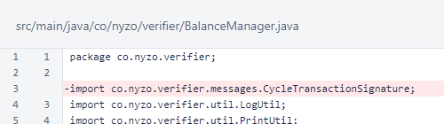CycleTransactionManager was deleted. This class was used for long-term, off-blockchain storage of cycle transactions. This gave verifiers time to collect cycle-transaction signatures so those signatures could be bundled with cycle transactions in the target block.
Removal of this class does not affect historical blockchain processing, and it does not prevent verifiers from running properly with the version-1 protocol. It would, however, make approval of new cycle transactions impractical in a blockchain running the version-1 protocol.

In MeshListener, messages of type CycleTransactionSignature47 and CycleTransactionListRequest49 are no longer processed. Cycle transaction signatures are now sent as Transaction5 messages, and the pending cycle transactions are stored in the balance list.
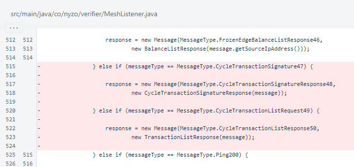Messages of type CycleTransactionSignature47, CycleTransactionSignatureResponse48, and CycleTransactionListResponse50 are no longer processed in Message.processContent(). These messages are not used in blockchain version 2.
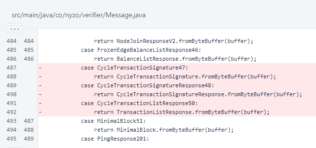Message types CycleTransactionSignature47, CycleTransactionSignatureResponse48, CycleTransactionListRequest49, and CycleTransactionListResponse50 were commented out of the MessageType enumeration.
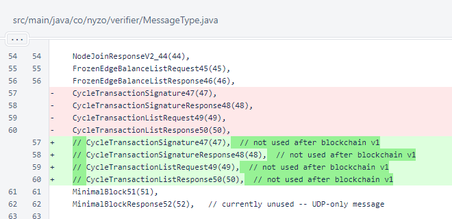In Verifier, maintenance of CycleTransactionManager was removed, because CycleTransactionManager no longer exists.
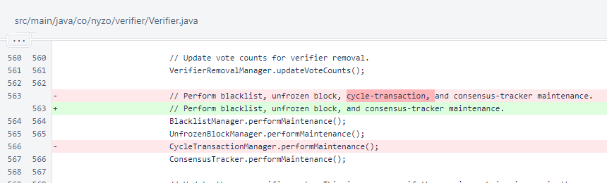In Verifier.createNextBlock(), transactions from the CycleTransactionManager are no longer added. Cycle transactions and cycle-transaction signatures are both processed through TransactionPool in blockchain version 2.
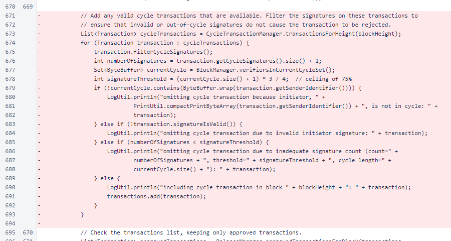ClientTransactionUtil.sendCycleTransaction() and ClientTransactionUtil.sendCycleTransactionSignature() were both removed. The process of sending cycle transactions and signatures for cycle transactions has become much simpler under the version-2 rules.
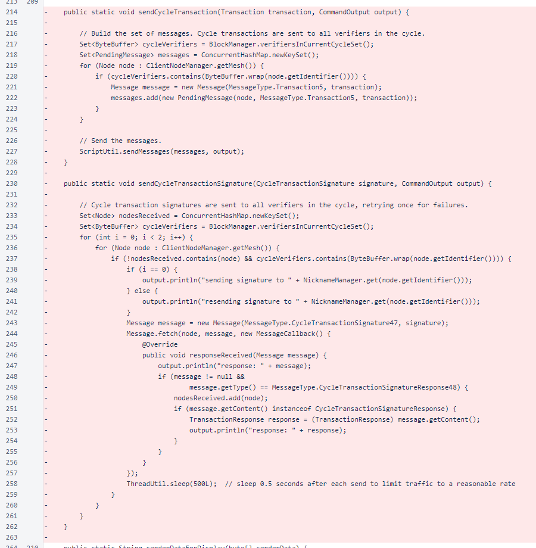Unused imports were removed from CycleTransactionSignCommand.
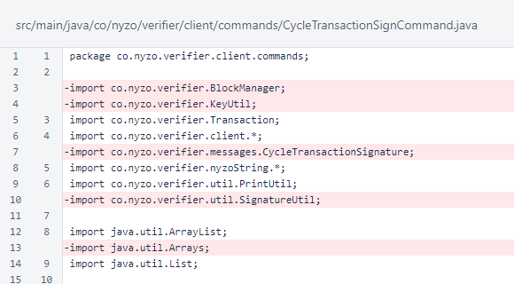The CycleTransactionSignature class was eliminated.
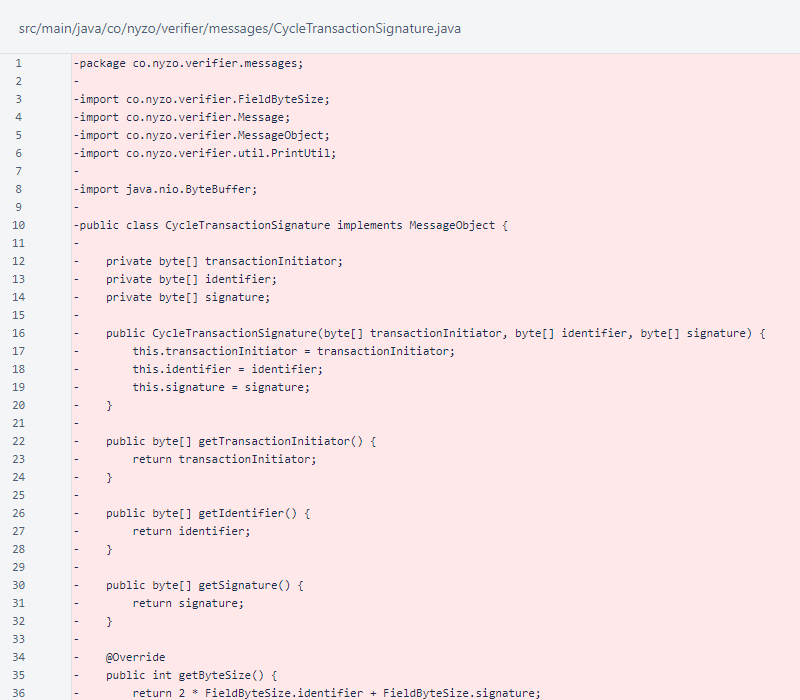The CycleTransactionSignatureResponse class was eliminated.
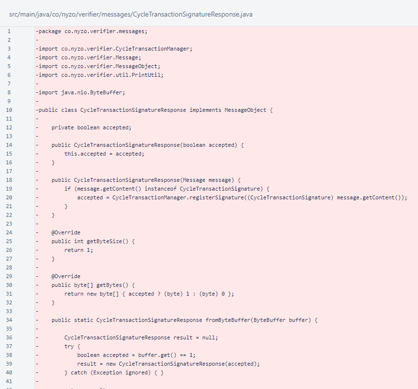In TransactionListResponse, response to CycleTransactionListRequest49 was eliminated.
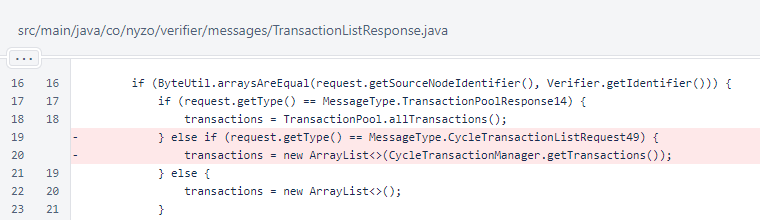In TransactionResponse, special handling of different transaction types was reduced to a single case. Now, all transactions are added to the TransactionPool.
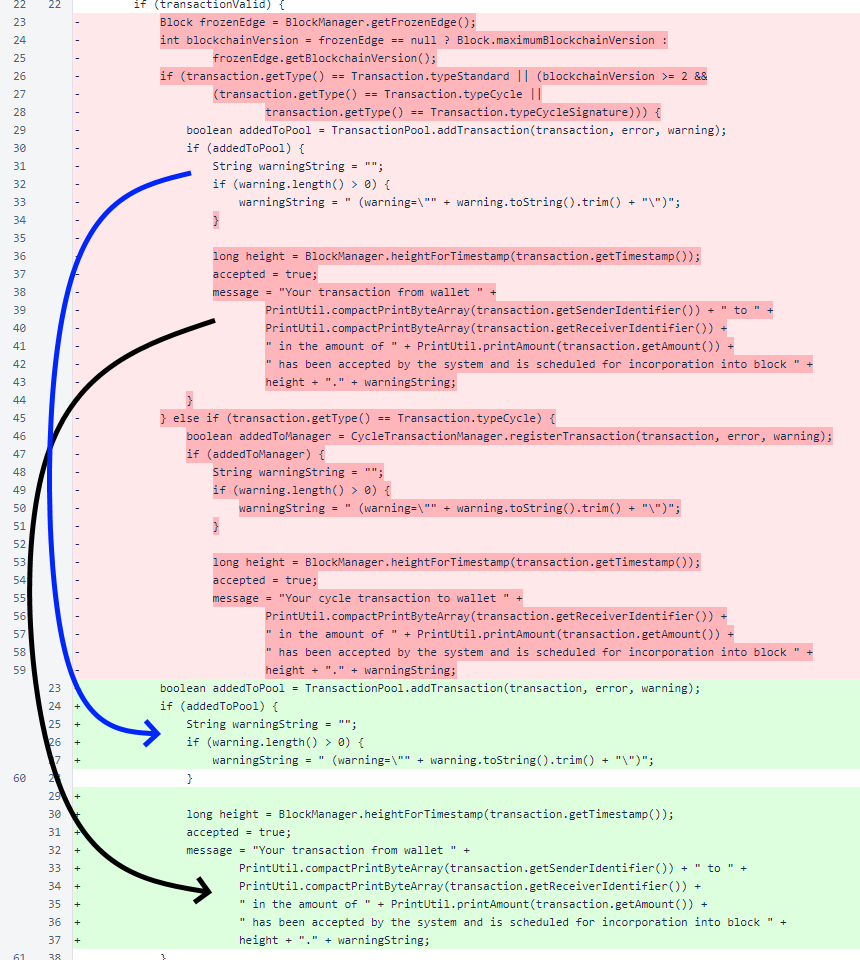An argument for vote was added to CycleTransactionSignScript.
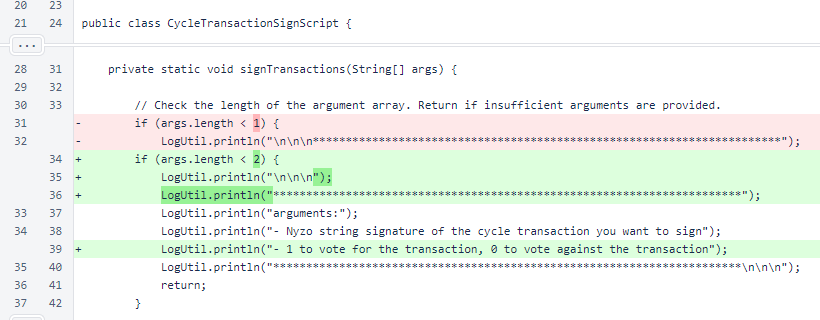The vote is now checked. The only valid values are 1 and 0.
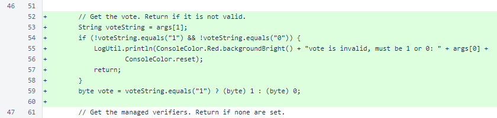The list of managedVerifiers is no longer needed by the getTransaction() method. Previously, these were used to query the list of cycle transactions, but the cycle transactions are now available in the balance list.
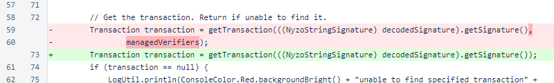The set of Node objects has been renamed from cycle to cycleNodes, and a list of ByteBuffer objects is now retrieved to provide cycle ordering information.
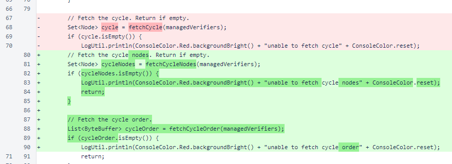The call to sendSignatures() now passes the transaction signature instead of the transaction. Also, the vote and the cycleOrder list are now passed to this method.
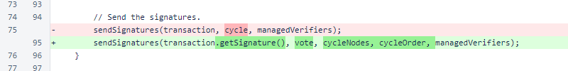The CycleTransactionSignScript.getTransaction() method now retrieves the cycle transaction from the balance list.
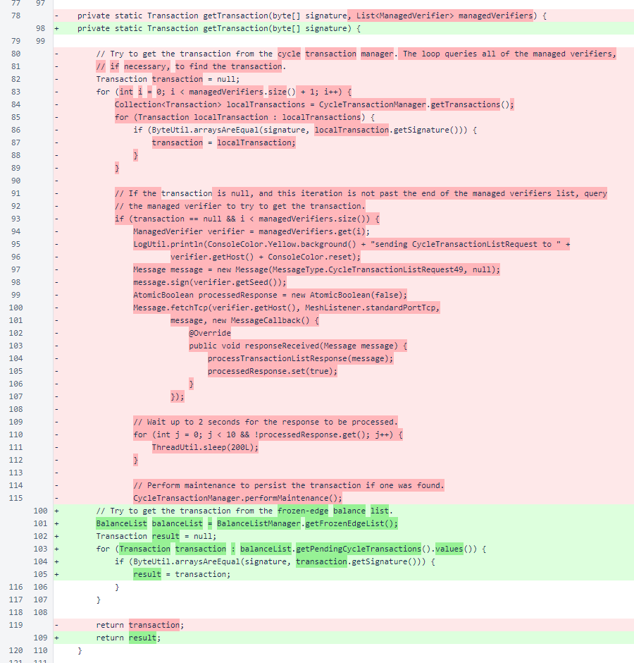The CycleTransactionSignScript.processTransactionListResponse() method was removed. The CycleTransactionSignScript.fetchCycle() method was renamed to fetchCycleNodes(). The CycleTransactionSignScript.fetchCycleOrder() method follows the same structure as the CycleTransactionSignScript.fetchCycleNodes() method, getting the cycle order from a BootstrapResponseV2.

The CycleTransactionSignScript.sendSignatures() method now sends Transaction objects instead of CycleTransactionSignature objects. Also, instead of sending signatures to the entire cycle, the signatures are only sent to the first 5 verifiers in the provided cycle order. At the current cycle length of 1995, this reduces the total number of messages to approximately 0.25% of the previous level.
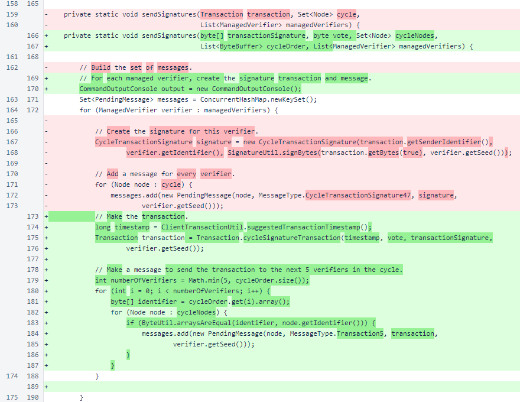Initialization of the lines field in LogUtil has been moved to the println() method. This avoids an initialization race that would sometimes cause a null-pointer exception to be thrown when accessing this field.
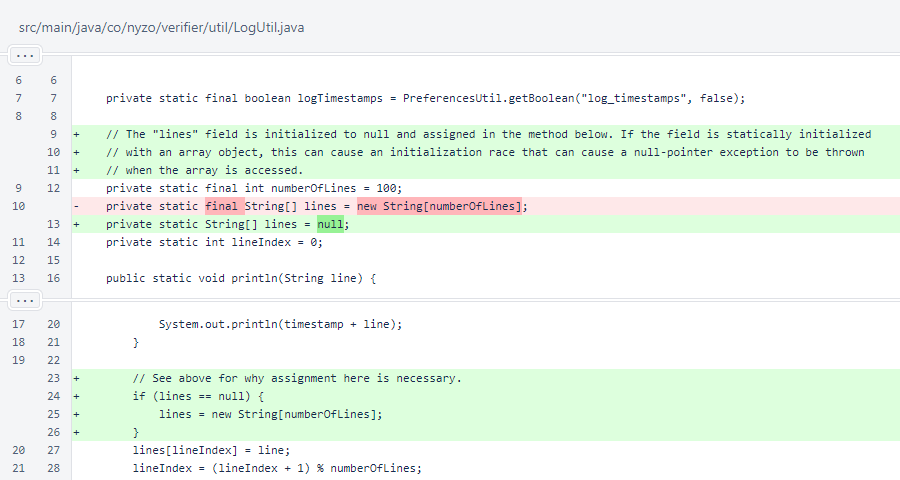